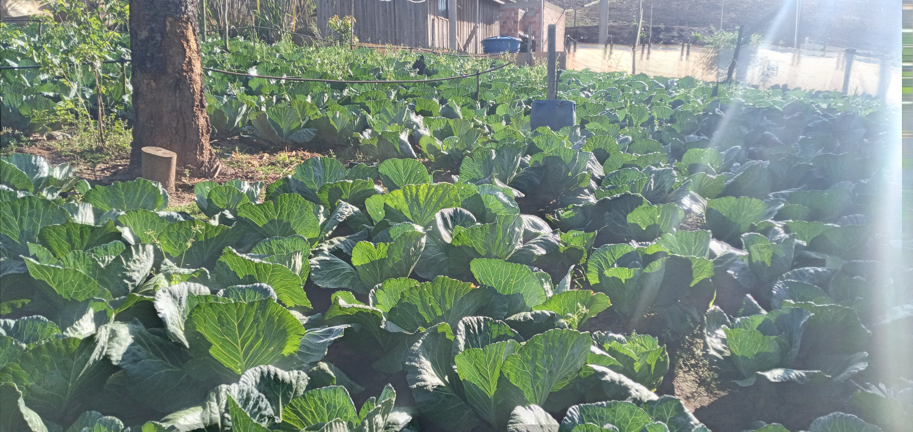
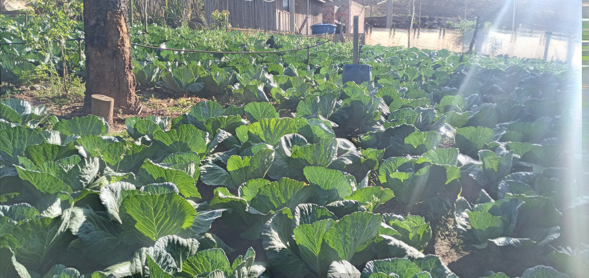

Aylton Lourenço
Nasceu em Assaí, uma pequena cidade do interior do Paraná, onde o tempo parece correr mais devagar e os valores mais simples da vida ainda florescem com força. Filho único de uma família humilde, teve sua infância marcada pela saudade dos irmãos que partiram ainda bebês, e pelo carinho e ensinamentos dos pais, o Sr. Benedito e Dona Dolores, agricultores de mãos calejadas e corações generosos.
Ainda menino, Aylton acompanhou os pais na mudança para Sapopema, onde a vida seguia seu curso em um sítio cercado pela natureza e pelo esforço diário da lida com a terra. Cresceu ali, entre as plantações, o cheiro do mato e o cantar do galo ao amanhecer. Desde cedo aprendeu o valor do trabalho, da simplicidade e da esperança que nasce com cada semente lançada ao solo.
Na década de 1980, já moço, casou-se e iniciou sua própria família. Para garantir o sustento do lar, trabalhou em uma mineradora de carvão — um ofício duro, que exigia mais do corpo do que se podia imaginar, mas que nunca apagou o brilho do sonho que ele trazia no peito: o de voltar a viver da terra.
E assim foi. Entre altos e baixos, idas e vindas, arrendando pedaços de chão, sendo caseiro de sítios, Aylton nunca desistiu. Com perseverança e fé, conquistou, enfim, a sua tão sonhada terrinha. Hoje, com orgulho, cultiva hortaliças frescas — alface, beterraba, repolho, cheiro-verde — e cria galinhas e porcos com o mesmo cuidado que viu seus pais dedicarem à vida no campo.
Mas Aylton é mais do que um agricultor. Ele é um sonhador que acredita na força da união entre o campo e a cidade, na importância da terra bem cuidada e na cultura que floresce nas pequenas comunidades. Dedicou sua vida a projetos que promovem a sustentabilidade e a valorização das raízes locais, mostrando que é possível, sim, viver com dignidade, respeito à natureza e amor pela terra que nos sustenta.
A história de Aylton Lourenço é a história de tantos brasileiros invisíveis, que fazem o alimento chegar à mesa com suor e esperança. Mas, acima de tudo, é a história de um homem que nunca deixou de acreditar — e que semeou na vida o que o coração sempre soube cultivar: a esperança, o trabalho e o amor pela terra.
Galeria de Imagens
 
